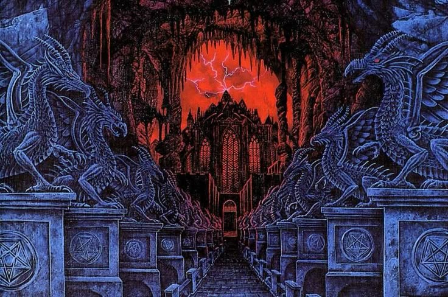
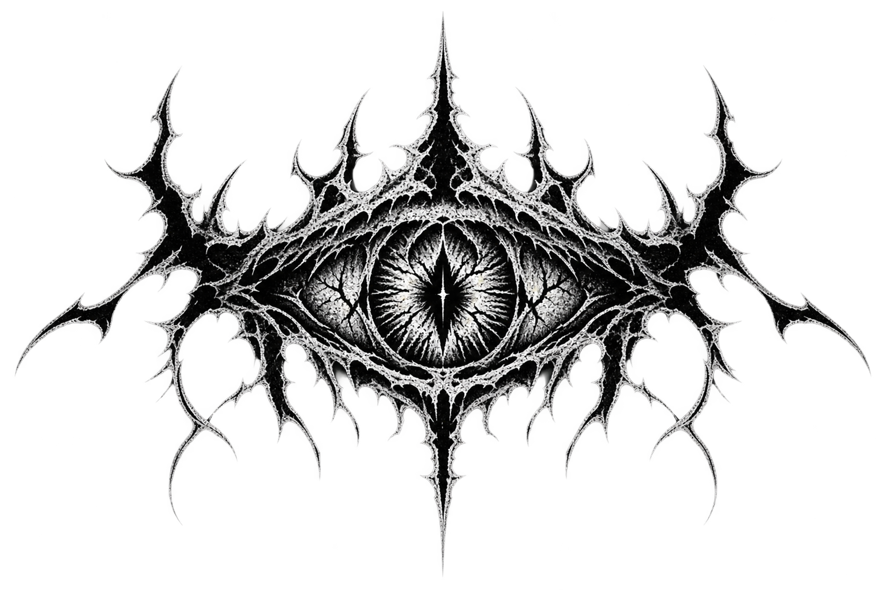
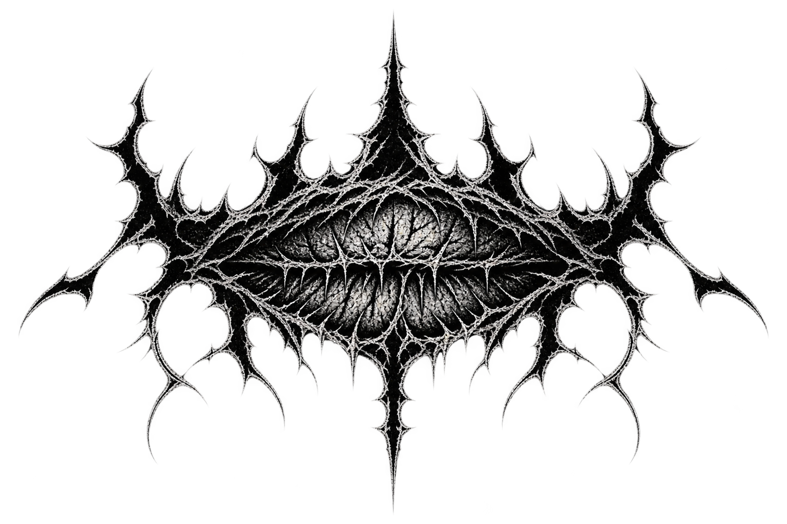
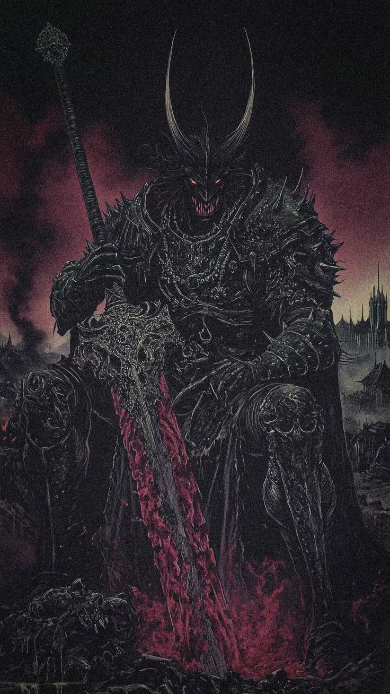
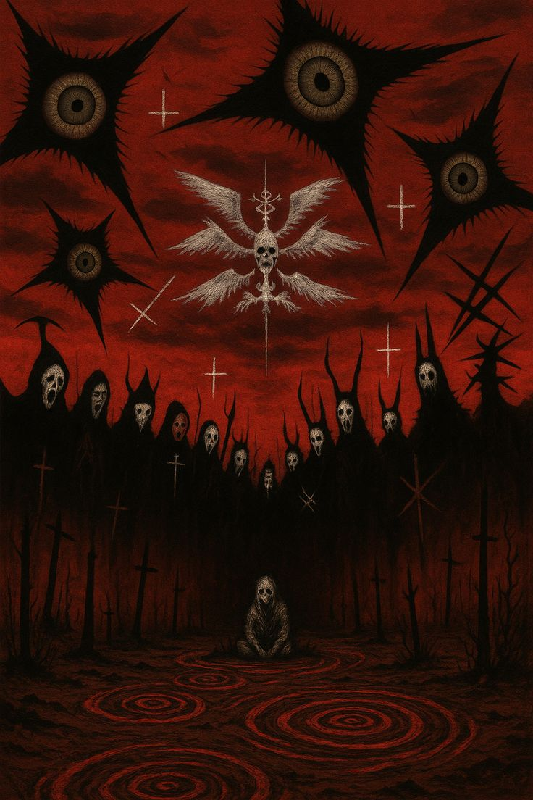

Hall
Lorong tanpa ujung yang menyimpan lebih banyak dari yang ingin ia tunjukkan.
enter ›by Fadly


tap the gate below

Lorong tanpa ujung yang menyimpan lebih banyak dari yang ingin ia tunjukkan.
enter ›
Sosok tanpa nama yang menatap balik siapa pun yang berani menatapnya lebih dulu.
enter ›
Gerbang terakhir. Sampai sini berarti kamu memang diundang masuk.
enter ›
open your eye

GO TO HELL, YOU FUCKING IDIOT, SINNER
tap to fall
“You’re fucking dead, you moron.”